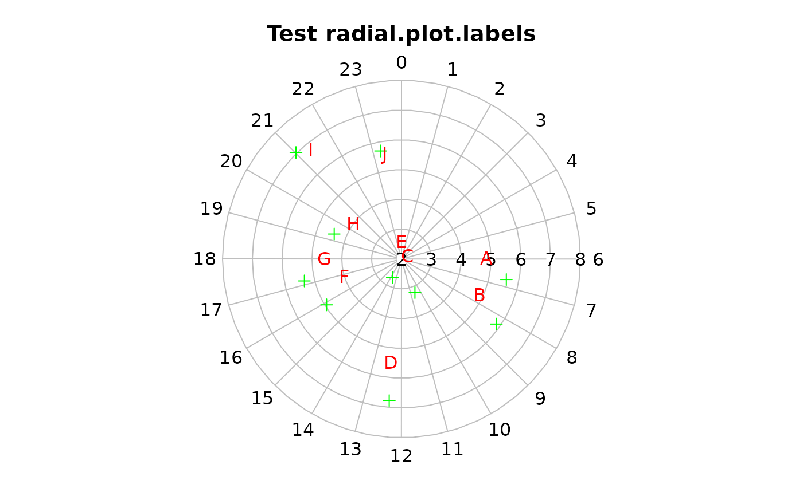
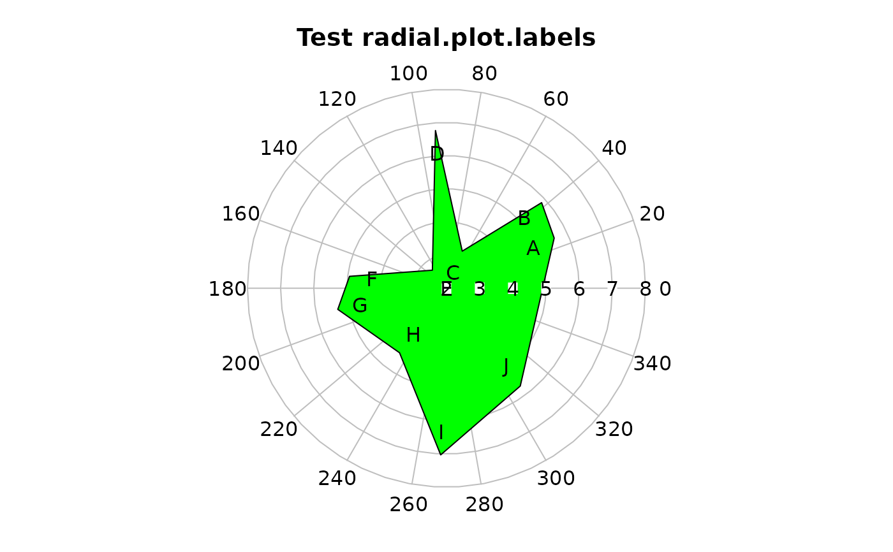

Display labels on a circular grid
radial.plot.labels.Rdradial.plot.labels displays a labels on a circular plot produced by one of the radial.plot family of functions.
Usage
radial.plot.labels(lengths,radial.pos=NULL,units="radians",radial.lim=NULL,
start=0,clockwise=FALSE,labels,adj=NULL,pos=NULL,boxed.labels=FALSE,...)Arguments
- lengths
numeric data vector. Magnitudes will be represented as the radial positions of symbols, line ends or polygon vertices.
- radial.pos
numeric vector of radial positions. These will be converted to radians if the units argument is not "radians".
- units
The units of radial.pos may be degrees or 24 hour clock positions. If units is "polar" or "clock24" respectively, the values of radial.pos will be converted into radians.
- radial.lim
Optional radial limits for the circular plot. These must be the same as the radial limits of the original plot.
- start
The zero position on the plot in the units of radial.pos.
- clockwise
Whether to increase angles clockwise rather than the default counterclockwise.
- labels
text labels to display on the plot.
- adj
Text justification as in the text function.
- pos
Text position as in the text function.
- boxed.labels
Whether to use boxed.labels or text.
- ...
additional arguments passed to boxed.labels or text.
Details
Don't confuse this function with the radial.labels argument in the radial.plot function. This labels the values rather than the grid.
Examples
testlen<-c(rnorm(10)*2+5)
# do the labels in clock24 units
testpos<-c(6.74,8.3,10.55,12.33,13.75,15.9,17.15,19.36,21.02,23.27)
oldpar<-clock24.plot(testlen,testpos,main="Test radial.plot.labels",
rp.type="s",point.symbols=3,point.col="green")
radial.plot.labels(testlen,testpos,units="clock24",labels=LETTERS[1:10],
pos=3,col="red")

testangle<-c(25,42,67,94,128,173,191,234,268,307)
# now a polar plot
polar.plot(testlen,testangle,main="Test radial.plot.labels",rp.type="p",
poly.col="green")
radial.plot.labels(testlen,testangle,units="polar",labels=LETTERS[1:10])

# reset par
par(oldpar)